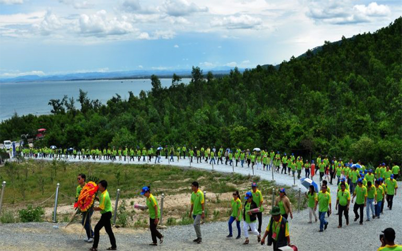
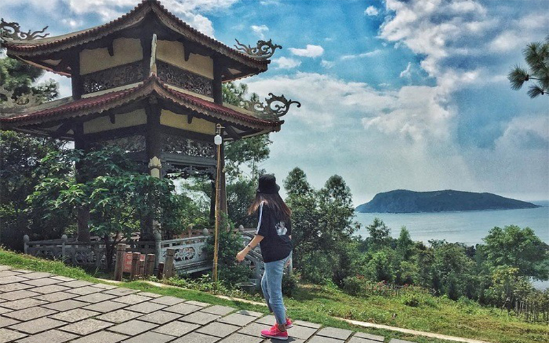
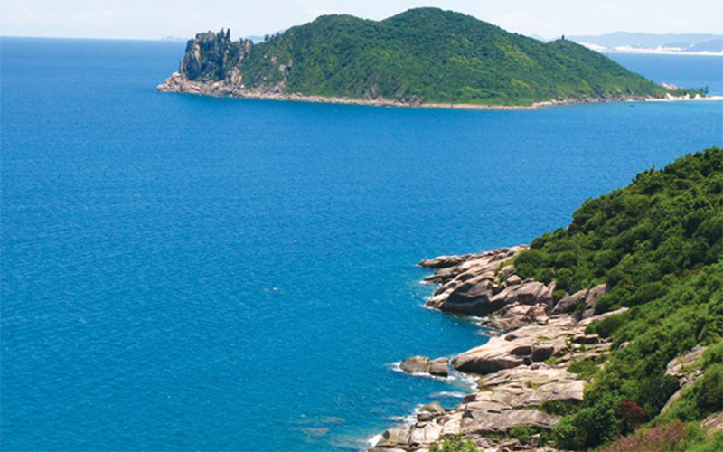

Vũng Chùa Đảo Yến - Điểm đến tâm linh hấp dẫn du khách
Chốn yên nghỉ của vị đại anh hùng dân tộc
Vũng Chùa - Đảo Yến được biết đến là nơi yên nghỉ của vị đại tướng anh hùng của dân tộc Võ Nguyên Giáp. Khu vực này có diện tích khoảng 10ha và nằm ngay dưới chân đèo Ngang hùng vĩ. Vũng Chùa là một bãi biển trong xanh, bờ cát trắng trải dài và xung quanh là khung cảnh yên bình của những rừng cây ngút ngàn xanh. Vũng Chùa hướng ra biển Đông nhưng ở đây lại khá kín gió, do đó, nơi đây được cho là vùng đất có vị trí khá là đắc địa.
Đảo Yến là hòn đảo nhỏ cách bờ từ Vũng Chùa tầm 1km, nếu đi bằng thuyền thì sẽ chỉ mất khoảng 20 phút để ra được đến đây. Nhiều người nhận xét rằng, đảo Yến có thế tựa như một bức bình phong nổi lên ngay giữa biển khơi với niềm tin nơi đây sẽ trấn giữ đất liền và biển lớn, bảo vệ cho cuộc sống của con người. Vũng Chùa - Đảo Yến nay đã trở thành một địa điểm hành hương thu hút rất đông du khách đến đây tham quan và thắp nén hương tưởng nhớ vị đại tướng anh hùng mỗi năm.
Tìm về nguồn gốc cái tên Vũng Chùa - Đảo Yến
Người dân địa phương đã kể lại rằng ngày xưa vùng đất này có tên gọi là Hòn Nồm dựa trên cách tính phương hướng. Tuy nhiên, sau này có một công ty đã đưa chim yến về đây nuôi để khai thác chim yến nên từ đây có rất nhiều chim yến về trú ngụ. Cái tên đảo Yến Quảng Bình cũng từ đó mà ra. Vậy còn cái tên Vũng Chùa có nguồn gốc từ đâu? Theo người dân địa phương, ngày xưa ở khu vực này có một ngôi chùa lớn nhưng bây giờ trải qua thăng trầm thời gian thì chỉ còn lại dấu tích của nền chùa thôi nhưng cái tên Vũng Chùa là có từ đó. Khu vực này cũng được bao bọc bởi 3 hòn đảo đó chính là Hòn La, Hòn Gió và Hòn Nồm tạo thành thế tam giác kiềng ba chân nên khá là kín gió nên các tàu thuyền thường neo đậu lại mỗi khi có bão đổ về.
Nhận xét về phong thủy khu vực này, một người có uy tín trong làng cho rằng “rất ít nơi có được vị thế đẹp như ở đó” bởi vì nơi đây có “lưng tựa núi mặt nhìn ra biển lớn”.